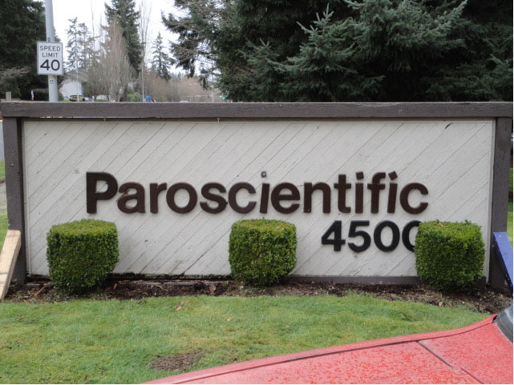
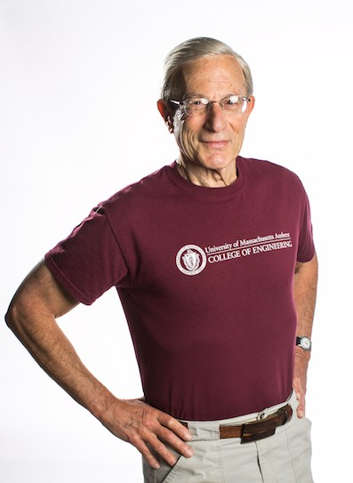
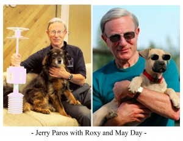

Company
 Paroscientific, Inc. is the leader in the field of precision pressure measurement.
The company was founded in 1972 by Jerome M. Paros after a decade of research on digital force sensors. Application of this technology to the pressure instrumentation field resulted in transducers of the highest quality and superior performance.
Today Paroscientific manufactures and sells a complete line of high precision pressure instrumentation. Resolution of better than 1 part-per-billion and typical accuracy of 0.01% are achieved even under harsh environmental conditions. Digiquartz® products are used by professionals the world over in such diverse fields as Earth and Atmospheric Sciences, Oceanography, Metrology, Meteorology, Process Control, and Aerospace.
Paroscientific maintains a Quality Assurance System that is certified to the requirements of the ISO-9001 International Quality Standard. Our quality system and commitment to excellence ensure our customers of outstanding products and services – solutions that work the first time out and for years to come.
Founder
Jerome M. Paros
 Jerome M. Paros is a leader in the field of geophysical measurements. He holds more than 50 patents and has authored many papers and articles about scientific instrumentation. Jerry is the Founder, President, and Chairman of Paroscientific, Inc., Quartz Seismic Sensors, Inc. and related companies that use the quartz crystal resonator technology he developed to measure pressure, acceleration, temperature, weight, and other parameters. Paroscientific and its brother-sister companies have generated hundreds of millions of dollars in sales and profits.
Fifty years ago, almost all transducers had analog (voltage or current) outputs. Jerry predicted that the increasing use of digital computers, digital controls, and digital data acquisition systems, would require high-accuracy, inherently-digital sensors. Quartz crystal resonant sensors were designed with high resolution and accuracy, low power consumption, and insensitivity to environmental errors. Broadband, quartz transducers are the most important sensors used in many atmospheric, oceanic, seismic, and hydrologic applications because they permit the measurement of phenomena having great spatial and temporal variability. These products have improved the measurements of geophysical phenomena such as tsunamis, and enhance our ability to understand the complex earth, air, and ocean processes that produce climate change.
 Jerry received his undergraduate degree in physics at the University of Massachusetts and his graduate degree in physics from Columbia University. He has supported science and education with philanthropic endowments including the “Jerome M. Paros Fund for Measurement and Environmental Sciences Research” at the University of Massachusetts, the “Professor of Sensor Networks Chair and “Cascadia Sensor Network Fund” at the University of Washington, as well as the Jerome M. Paros-Palisades Geophysical Institute Fund for Engineering Innovation in Geoscience Research” and the “Senior Research Scientist of Observational Geophysics Chair” at Columbia University. These gifts support the research, development, and deployment of new instrumentation and measurement systems that will advance cross-disciplinary knowledge in the oceanic, atmospheric, and earth sciences. He has also established college scholarships at a number of technical societies and supported K-12 science and mathematics education in the Boston and Puget Sound regions.
Jerry is an ISA Fellow and received the Si Fluor Technology Award in 1980 and the Albert F. Sperry Founder’s Award in 2006. In 2011, he received the Distinguished Achievement Award from the University of Massachusetts.